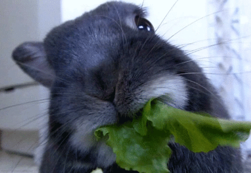

ben debear
I am Ben DeBear, a rabbit studying programming in Mr. Orak's class. I am a rabbit because I eat rabbit food, unlike Mr. Orak.

Honors Precalc
Honors Latin II
Honors English I
Honors Programming